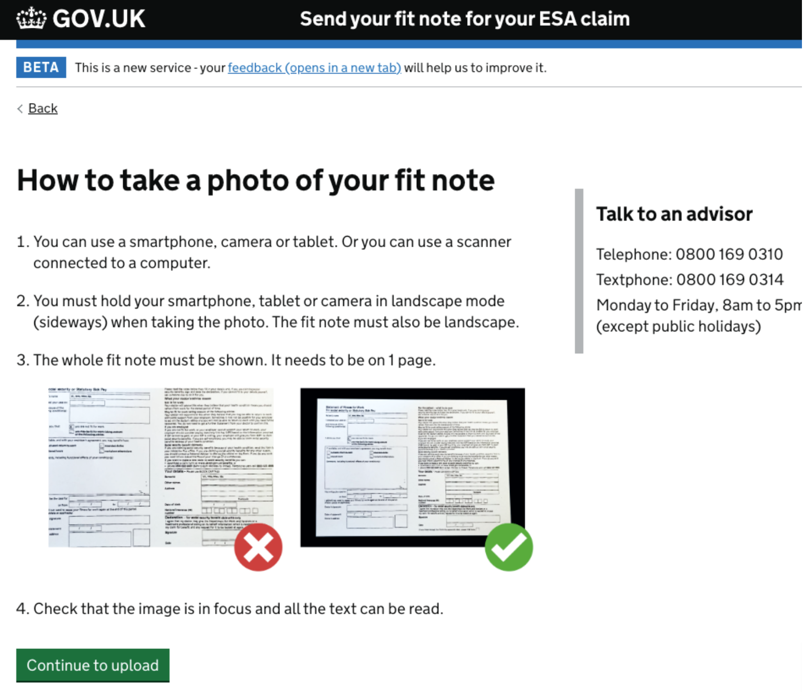
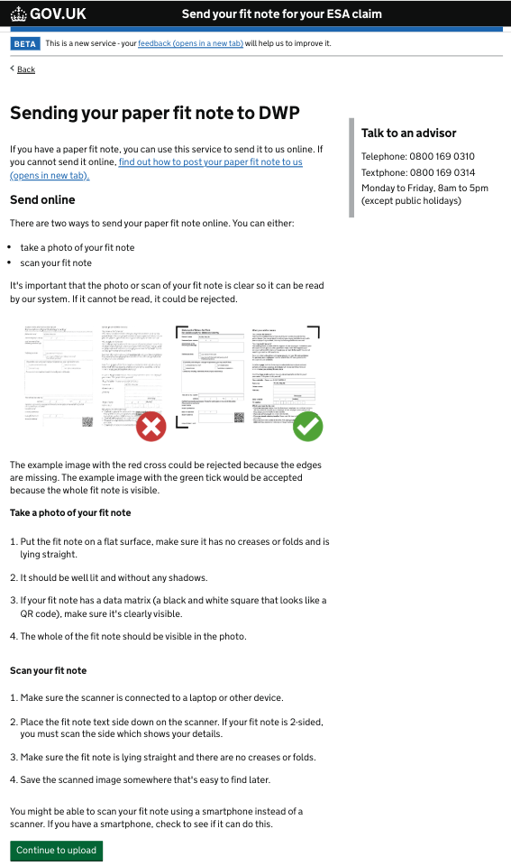

2023 | DWP | LEAD UX Designer
Helping citizens get their benefits faster
Overview
This case study showcases my work on 'Send your fit note' (SYFN), a service helping 500,000–700,000 citizens annually submit fit notes to access benefits.
As the user-centred design lead, I collaborated with a UX writer and user researchers to improve the clarity and accessibility of the guidance and user flow.
The changes improved the user experience, making the process easier. Within six months, satisfaction rose by 4.6%, completion rates by 2.8%, and digital uptake by 9.7%.
A fit note is an official statement from a healthcare professional, like a doctor, nurse, or physiotherapist, providing their advice on a citizen’s fitness for work.
Using SYFN, citizens upload an image of their fit note to provide the 'Department for Work and Pensions (DWP)' with the evidence needed to process their benefits claim.
Problem
Citizens were facing significant delays and complications when applying for and receiving their benefits.
Our analytics and feedback showed that some users:
- had trouble understanding the guidance content
- struggled to upload their fit notes due to issues with the service's backend technologies
- dropped on the /upload page due to not having the correct file format
This resulted in increased frustration for applicants and a higher workload for staff managing inquiries and complaints.
Who were the users?
Primary User: Citizen
A disabled or ill citizen (sick for 7+ days) uploads their fit note to DWP, to process their benefit claim.
Secondary User: Agent

Processes benefit claims and often assists users over the phone with uploading fit notes.
Stakeholder: Policy Officials
Sets policies for fit notes and benefit funding, collaborating with ministers, NHS staff, and project teams.
Solution
We developed new guidance content and concepts for 'upload' pages to improve users' understanding of what's needed.
Key features include:
- Clearer and more helpful guidance content and error messages
- Better examples of good and bad images of fit notes
- Enhanced back-end capabilities to automate fit note scanning
Before
After
 Process
But how did we get there?
- User research: Conducted interviews, surveys, and usability testing with citizens and staff to uncover actionable insights.
- Analysis and ideation: Assessed back-end performance and user flows, identified bottlenecks, and drew inspiration from similar services.
- Prototyping and testing: Designed low- and high-fidelity prototypes, iteratively tested with users, and refined based on feedback.
- Collaboration and alignment: Worked with UX writers, researchers, developers, and policy teams to ensure feasibility and secure sign-off.
- Implementation: Partnered with developers to roll out changes, preserving the design intent and improving the user experience.
Early research findings
Through research, we identified that primary users are likely to submit their fit note several times due to a recurring condition. They may also:
- have limited digital literacy
- have accessibility needs
- use their phones to access the service as they may not own a computer
We also interrogated Google Analytics and found the following:
- 3 = average no. of attempts to upload a fit note
- 37% = drop-off rate
- 63% = monthly completion rate
Prototype iteration 1
In an attempt to enhance completion and satisfaction, I made design improvements to the guidance pages, error messages, and upload screen.
The guidance page underwent two major iterations, informed by feedback from heuristic evaluations and usability testing on desktop and mobile.
Our analysis showed that fit notes with data matrices or 'QR codes' need to have these prominently displayed in the photo so back-end technologies can automatically read their contents.
User research sessions revealed that 'data matrix' was a confusing term for users, as was 'QR code', especially for those with lower digital literacy.
"My mum wouldn’t know what a QR code is."
Collaborating with the Content Designer, we created relatable copy describing the data matrix as a 'black and white square', which resonated well in subsequent testing, as the fit note contains only one square.
I co-authored a Medium article going into more detail about this example of bias in design.
Results
A good UX can improve lives
Citizens rely on these services for vital benefit funding, making accessibility and user-friendliness essential.
Delays can cause significant distress, impacting mental health and disrupting everyday life.
A service that truly meets their needs can alleviate these struggles and provide much-needed stability.
Making an impact
My design changes delivered significant results in under six months, boosting:
- satisfaction score by 4.6 percentage points
- completion rate by 2.8 percentage points
- digital uptake by 9.7 percentage points
Through accessible and thoughtful design, we empowered users to navigate the service more confidently, transforming lives and demonstrating the profound impact design can have on public services.
Conclusion
Lessons learned
Data-driven design
In live projects, using quantitative data for Reach, Impact, Confidence, and Effort (RICE) scoring helps prioritise design changes effectively, focusing on areas with the greatest impact. A/B testing confirms these changes, showing clear evidence of how design improvements benefit the service.
Digital literacy dilemmas
Users were advised to "take a screenshot," but one misunderstood it as photographing their screen with a smartphone. This revealed a bias in assuming all users understand technical terms, highlighting the need for clearer language to support those with lower digital literacy.
Content can't solve it all
Not all service issues can be resolved with front-end changes like content updates or redesigns alone. Often, more significant back-end improvements are required to automate processes, reduce manual tasks for users, and substantially enhance the overall user experience.